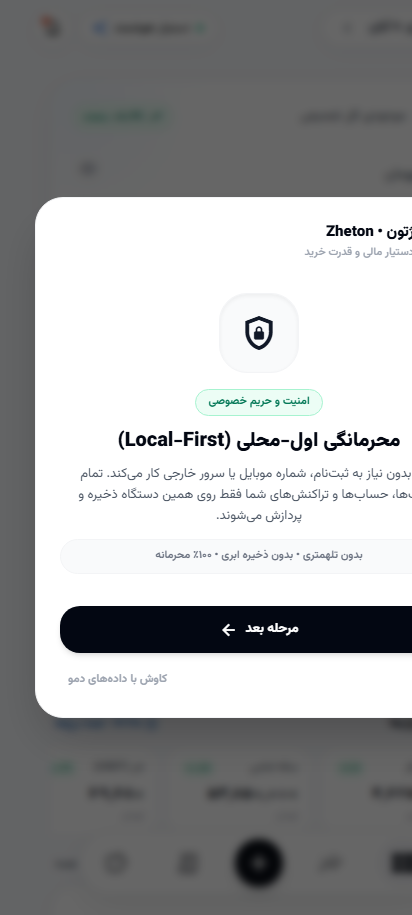
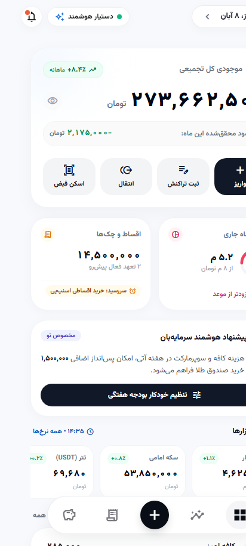
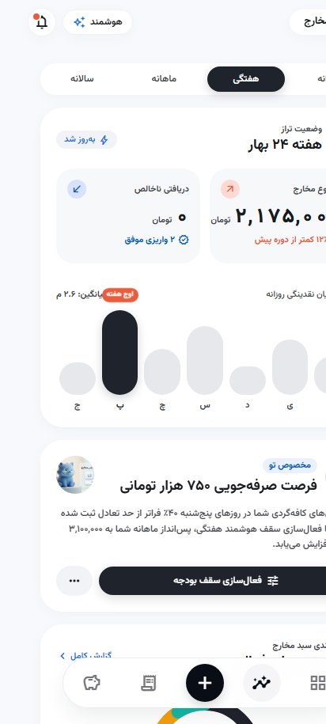
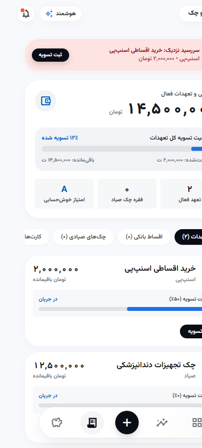
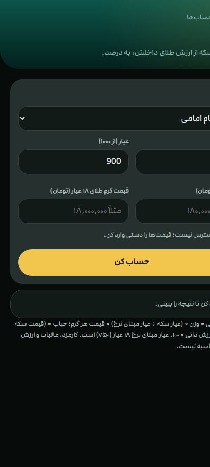

دستیار هوشمند مالی و دیدهبان قدرت خرید برای کاربران ایرانی
اپلیکیشن اندرویدی · معماری اولمحلی (Local-First) · متنباز
درس آزمایشگاه مهندسی نرمافزار · ارائهدهنده: ……………
پول نقدِ راکد هر روز ارزش خود را از دست میدهد، اما کاربر این «خونریزی» را نمیبیند.
تراکنشها در پیامک بانکهای مختلف گم میشوند؛ تصویر یکپارچهای از مخارج وجود ندارد.
اقساط اسنپپی و دیجیپی، وام و چک صیادی در اپهای خارجی پشتیبانی نمیشوند.
اغلب اپهای مالی شماره موبایل و دادهها را روی سرور خودشان نگه میدارند.
قابلیتهای جانبی: پشتیبانگیری رمزشده، یادآور، ویجت صفحهٔ اصلی، قفل بیومتریک، حالت حریم خصوصی، تقویم شمسی.





تنها دادهٔ دریافتی از اینترنت، نرخ عمومی بازار است؛ هیچ دادهٔ شخصیای از گوشی خارج نمیشود.
فایل CONTEXT.md یک واژهنامهٔ دامنه است که هر مفهوم مالی را دقیق تعریف میکند تا کد، طراحی و مستندات یک زبان داشته باشند:
Liquid Balance: پول قابل خرج، جدا از سپرده و دارایی.
Idle Cash: مازاد بر خرج ۳۰ روزه که در برابر تورم آسیبپذیر است.
Financial Cycle: ماه شمسی یا از روز حقوق.
برداشت و واریز هممبلغ بین حسابهای خود در کمتر از ۲ دقیقه.
قسط، BNPL یا چک صیادی با سررسید شمسی.
نیاز / خواسته / پسانداز برای قاعدهٔ ۵۰/۳۰/۲۰.
مدل فرایند: تکراری و افزایشی (Iterative/Incremental) با چرخههای کوتاه — شروع پروژه: تیر/مرداد ۱۴۰۵ (2026-07-27)
| ADR | تصمیم | دلیل |
|---|---|---|
| 0001 | منابع نرخ بازار و سلسلهمراتب داشبورد | دادهٔ قابلاعتماد و صفحهٔ خلوت |
| 0002 | موتور بدهی و BNPL + مخزن عمومی و امضای APK | پشتیبانی تعهدات بومی؛ متنباز امن |
| 0003 | آیکونهای SVG آفلاین؛ معیار طلا برای پرتفوی | عملکرد بدون اینترنت؛ سنجش واقعی در تورم |
| 0004 | اطلاعات کارت روی حساب بانکی | یک منبع حقیقت برای موجودی |
| 0005 | ارتقای درجا و ویجتهای Glance | بهروزرسانی بدون از دست رفتن داده |
| 0007 | ادغام در چهار تب و حذف شلوغی | سادگی و تمرکز کاربر |
| حوزه | ابزار |
|---|---|
| زبان و رابط کاربری | Kotlin 2.2 · Jetpack Compose · Material3 |
| داده و پسزمینه | Room 2.7 · WorkManager · Glance · Biometric · Coil · ZXing |
| ساخت | Gradle (Kotlin DSL) · AGP 9 · KSP · Version Catalog |
| محیط توسعه | Android Studio · VS Code · Git / GitHub |
| CI/CD | GitHub Actions: check · release · rates-daily/live/health |
| امنیت | CodeQL · Gitleaks · security scan |
| سرویس و وب | Cloudflare Workers (wrangler) · TypeScript · React · Vite · Vitest · Cypress |
| تست | JUnit 4 (حدود ۷۰ کلاس تست واحد) |
| هوش مصنوعی | دستیار کدنویسی با قواعد AGENTS.md |
موتورهای دامنه Kotlin خالصاند؛ بنابراین بدون دستگاه تست میشوند (پارسر پیامک، Luhn، شبا، خرج امن).
نبود CVV2 در ذخیرهسازی، پشتیبان رمزشده، اسکن نشت کلید و گزارشهای docs/security.
جریانهای زمانبندیشده سلامت و تازگی نرخهای بازار را کنترل میکنند.
github.com/PouyaRN/Zheton
سپاس از توجه شما 🙏